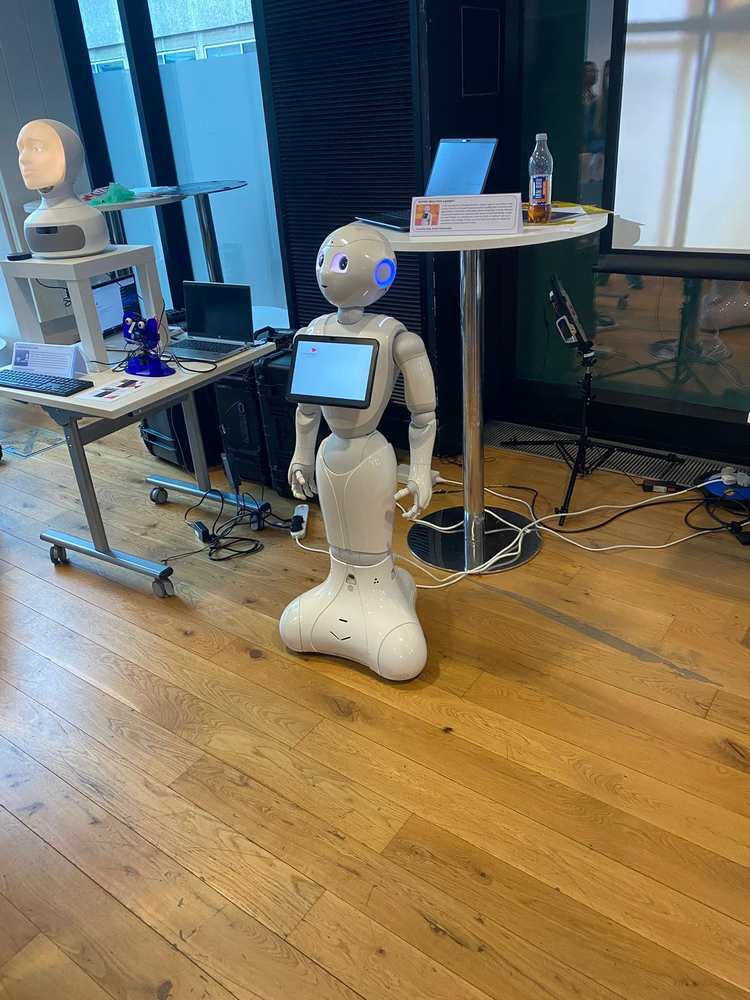
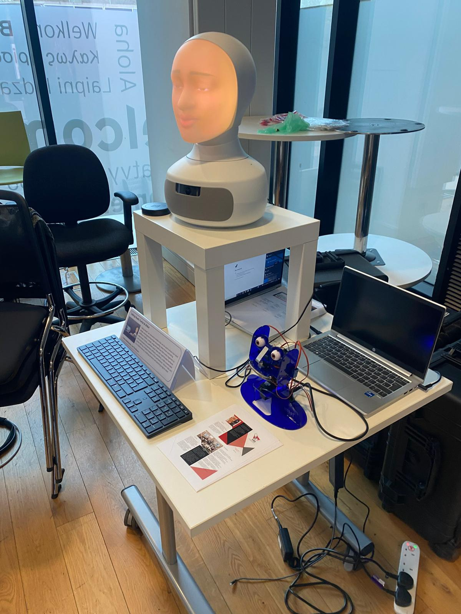
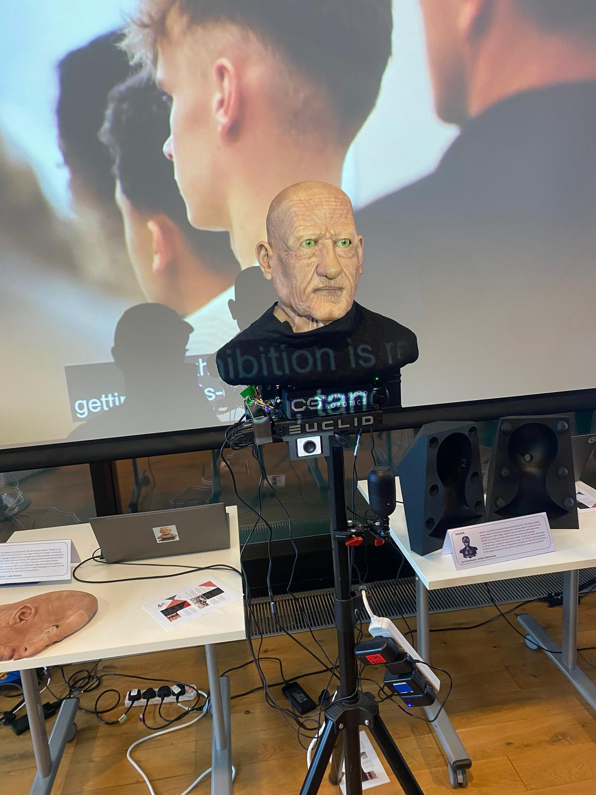

Physical presence
A robot can occupy space in a child’s environment in a way a tablet cannot.
Human–Robot Interaction
Exploring how a companion robot could support young people aged 9–17 through touch, movement, play and non-verbal emotional interaction.

Research-led UX concept
Young people aged 9–17
Companionship, touch, play and emotional support
UX research, feature ideation and product direction
Macy began as a response to a simple problem: many young people are drawn towards screens for comfort and routine, while traditional toys often struggle to compete.
This project explores whether a physical robot could offer a more embodied kind of companionship — closer to a pet than a domestic assistant.


Most digital companionship products rely heavily on speech, screens, facial expressions or app-based control. Macy explores a different interaction model: one based on touch, movement, softness and subtle feedback.
A robot can occupy space in a child’s environment in a way a tablet cannot.
Touch, gesture and movement can communicate comfort without constant speech.
Privacy, safety and control need to be visible from the start.
The wider research proposal positions Macy as a soft robotic platform for studying how emotion can be expressed through physical interaction. Instead of treating emotion recognition as something driven mainly by speech, facial expression or screen behaviour, the project focuses on tactile cues such as touch, pressure and movement.
This shifted the UX challenge from designing a robot that simply reacts to children, to designing a system that can make physical interaction legible. A hug, tap, push or moment of hesitation could become part of a richer interaction pattern, helping the robot respond in ways that feel more sensitive and less generic.
The design opportunity is not just companionship. It is building a robot that can help researchers understand how emotional communication changes across people, contexts and cultures.
The literature review pointed towards a set of early design opportunities. These are not final features, but research-informed directions for future testing.
Macy could respond to emotional cues with comfort, encouragement or humour.
Remembering preferences and repeated interactions may help create attachment over time.
Games, storytelling and creative activities could make interaction feel active rather than passive.
Parents and children need simple ways to understand and control sensing, memory and camera use.
A hug-friendly exterior could make Macy feel safer and more emotionally approachable.
The robot should encourage human connection, not replace it.
The strongest direction was to position Macy less like a household assistant and more like a responsive companion: quiet, tactile, expressive and child-led.
Responds to hugs, pats and physical interaction through movement, light or vibration.
Uses LED eyes, gestures and body movement rather than relying on speech.
Remembers routines, preferences and repeated play patterns over time.
Clear controls for microphones, cameras, memory and sensing states.
Macy is not intended to tidy rooms, answer homework questions or act like a general-purpose assistant. The concept is closer to a companion animal: something that reacts, learns, comforts and plays.
This makes the core design challenge less about productivity and more about emotional interaction: how can a robot feel present, trustworthy and supportive without becoming intrusive?